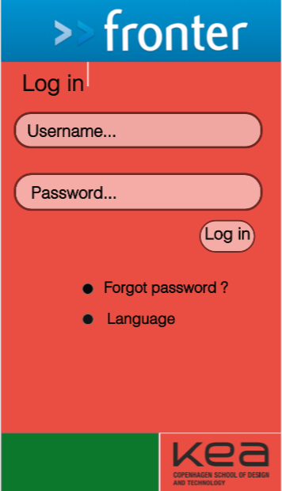
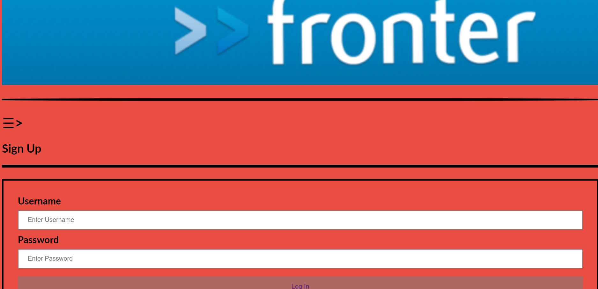
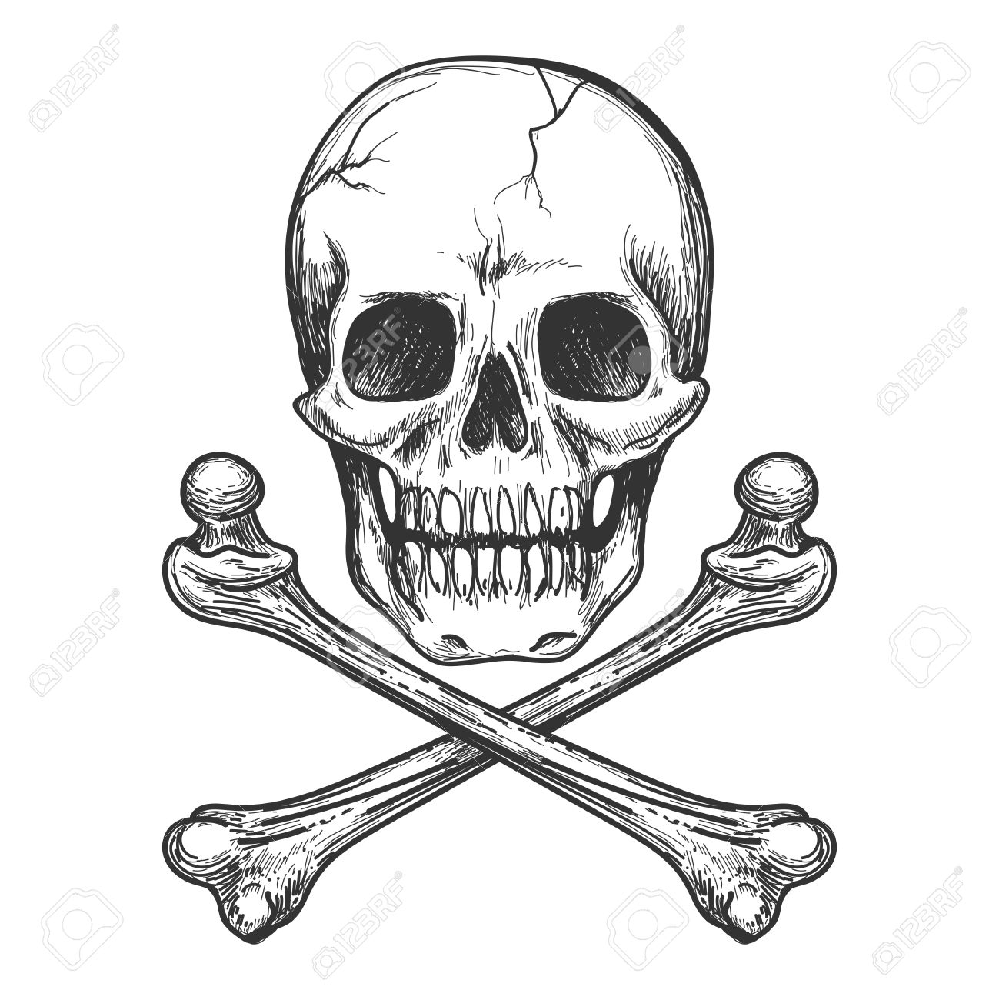
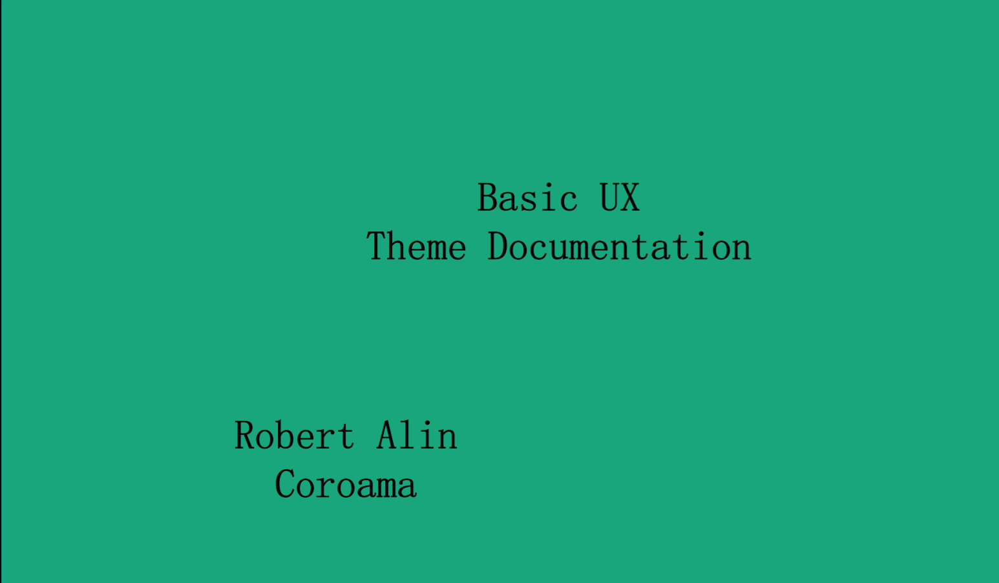

Basic UX
This theme was based also on team work and communication
The main goal was to design a phone application ,like a chat , based on KEA's and Fronter's design.
04.02.01 Design sprint
04.03.01 Web prototype
04.04.01 Design sprint:Native app
04.04.02 Theme documentation
